Análisis con SExtractor
SExtractor es una herramienta para el análisis de imágenes astronómicas, crea un catálogo de objetos a partir de estas imágenes. Este software puede procesar imágenes de gran tamaño y manejar una gran variedad de magnitudes de objetos.
Instalación
Para instalar SExtractor desde el paquete fuente de GitHub , primero se tiene que descomprimir el archivo. En el nuevo directorio ejecutamos el comando:
$ sh autogen.shEsto crea un archivo de configuración que se utiliza para compilar SExtractor. Ahora ejecutamos el comando:
$ ./configureFinalmente, ejecutamos el comando:
$ makePara comprobar que el software se ha instalado correctamente escribimos en la terminal:
$ sexEsto devolverá información básica sobre SExtractor. Para más detalles sobre la instalación se pueden consultar las siguientes fuentes:
Para usar SExtractor se necesita una imagen en formato FITS. Se puede descargar una imagen de ejemplo desde el siguiente enlace .
La imagen que utilizaremos tendrá el nombre de
IMAGEN.fits.

Creamos un nuevo directorio donde estará nuestra imagen y copiamos
los cuatro archivos default desde la carpeta de origen
descargada desde GitHub.
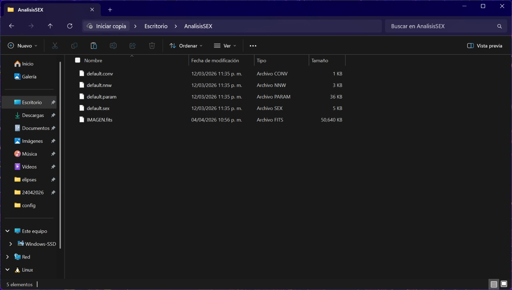
Archivos principales de configuración
-
default.sexes el corazón de SExtractor. Contiene los parámetros globales del análisis; aquí se define el nivel de detección, el nombre del catálogo de salida y otros parámetros importantes. -
default.paramcontiene la lista de parámetros que SExtractor medirá durante el análisis. SExtractor posee muchas propiedades observacionales disponibles. -
default.convcontiene el filtro de convolución utilizado para mejorar la detección de objetos. -
default.nnwcorresponde al archivo de red neuronal utilizado para la clasificación estrella-galaxia.

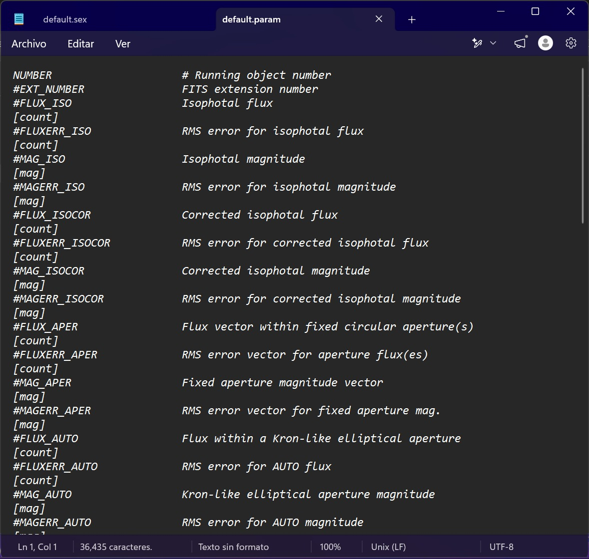
Uso de SExtractor
Para empezar a utlizar SExtractor, primero debemos colocar los parámetros que queremos obtener, para ello editamos el archivo default.param en algun editor de texto y colocamos los parámetros, o podemos crear el archivo desde la terminal y ahí mismo añadir los parámetros, haremos este último método, primero en nuestra terminal nos ubicamos en el directorio donde se encuentra nuestra imagen y los archivos default (sin el archivo default.param), luego ejecutamos el siguiente comando:
$ nano default.param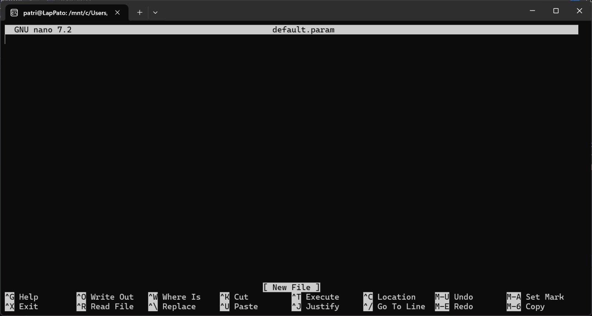
En este caso añadiremos los parámetros X_IMAGE, Y_IMAGE y MAG_AUTO, que corresponden a la posición del objeto en píxeles y la cantidad de luz total que emite el objeto respectivamente, luego guardamos el archivo con Ctrl + O + Enter y salimos del editor con Ctrl + X.
Ahora estamos listos para ejecutar SExtractor, para ello escribimos el siguiente comando en la terminal:
$ sex IMAGEN.fits
Esto ejecutará SExtractor con los parámetros definidos en el archivo
default.param y generará un catálogo de salida con los resultados con el nombre que viene definido en el archivo default.sex, en este caso no se editó el nombre por lo que se utilizará el nombre por defecto test.cat.
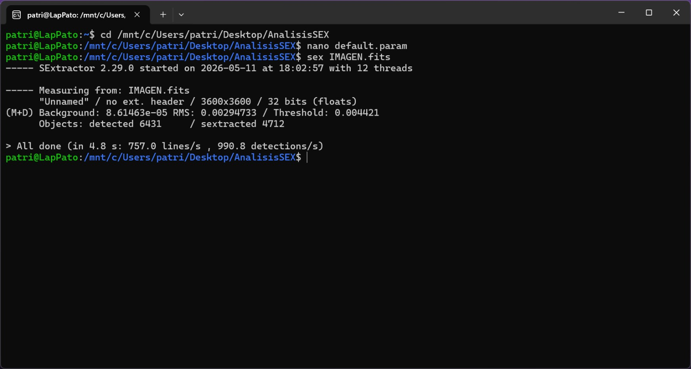
Podemos ver que detecto 6431 objetos y tomó 4712, ahora podemos abrir el catálogo de salida para ver los resultados, para ello escribimos el siguiente comando en la terminal:
$ cat test.cat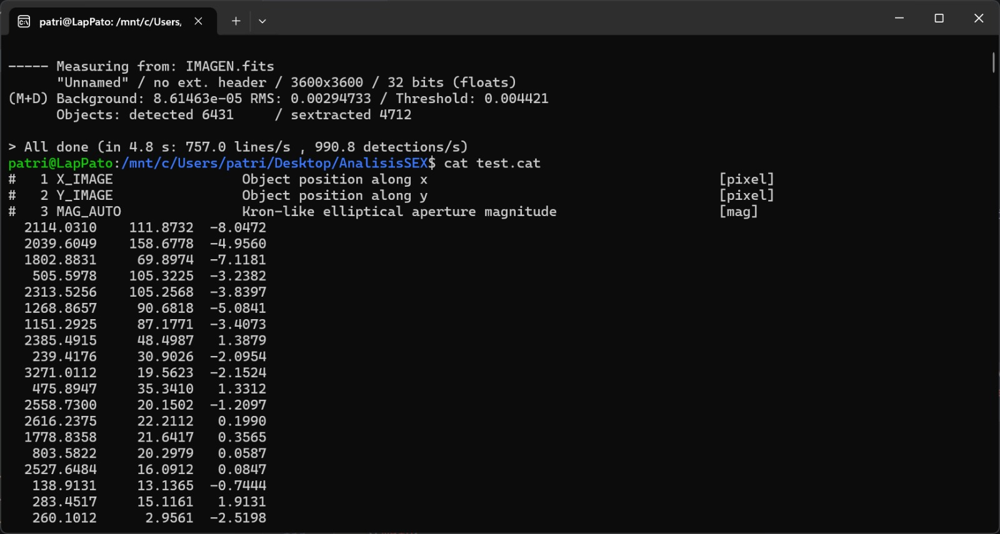
En el encabezado de nuestro cátalogo tenemos los parámetros que definimos con el número de columna que corresponde a cada uno.
Visualización
Para visualizar los resultados de SExtractor utilizaremos el software de visualización de datos astronómicos llamado DS9, que se puede descargar desde el siguiente enlace, para poder cargar nuestro catálogo necesitamos un archivo .vot, este archivo lo obtendremos con ayuda de Topcat, el cual es un visor y editor gráfico interactivo de datos tabulares, que se puede descargar desde el siguiente enlace. Para convertir nuestro catálogo de salida a formato .vot primero abrimos Topcat y luego cargamos nuestro catálogo de salida test.cat, para ello vamos a File > Load Table > Filestore Browser y seleccionamos nuestro catálogo, luego vamos a File > Save Table > VOTable y guardamos el archivo con el nombre que queramos, en este caso lo guardaremos como test.vot.
TopCat nos permite visualizar nuestros datos y obtener sus datos estadísticos, lo cual nos sirve para filtrar nuestros datos y, por ejemplo, visualizar objetos con una magnitud mayor a un valor específico.
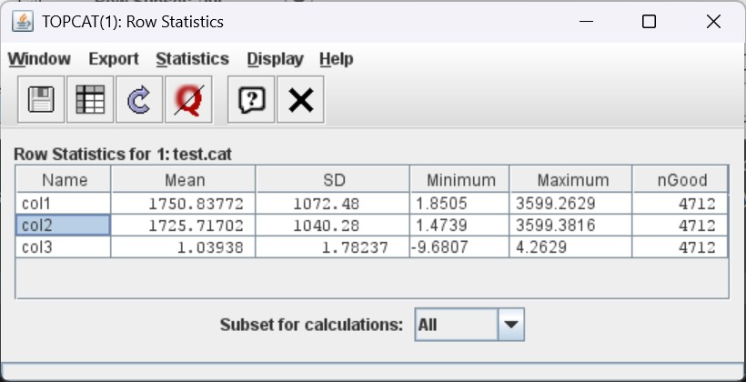
tenemos col1, col2 y col3 que corresponden a los parámetros X_IMAGE, Y_IMAGE y MAG_AUTO respectivamente, teniendo que en MAG_AUTO el objeto más brillante tiene una magnitud de -9.6 y el más débil tiene una magnitud de 4.26.
Ya que tenemos nuestro archivo .vot, podemos cargarlo en DS9, para ello primero abrimos nuestra imagen en DS9, luego, para cargar nuestro catálogo, vamos a la pestaña Analysis > Catalog tool, esto nos lleva a esta ventana:
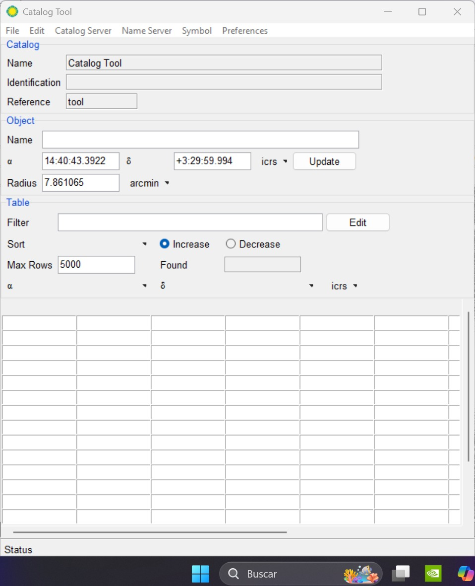
En esta ventana seleccionamos la opción File > Open y selecionamos nuestro archivo test.vot, esto nos cargará nuestro catálogo en DS9 y podremos visualizar los objetos detectados por SExtractor sobre nuestra imagen.
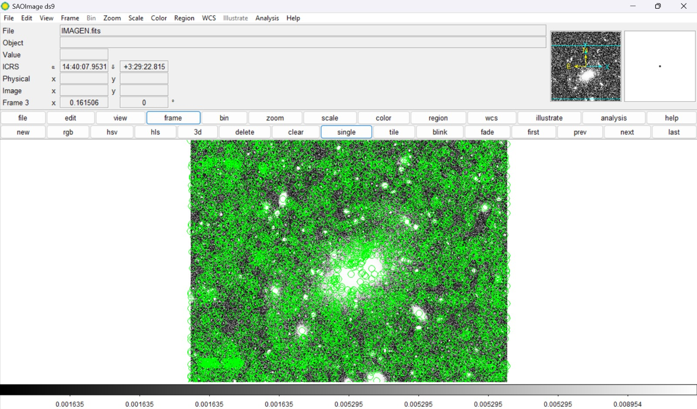
Los circulos verdes corresponden a los objetos detectados por SExtractor (4712 objetos), en la pestaña donde cargamos nuestro catálogo, podemos filtrar los objetos por su magnitud, en la sección "tabla" hay una opción de "filtro" donde podemos escribir la condición que queremos para alguna de las tablas, por ejemplo, si queremos visualizar solo los objetos más brillantes, podemos escribir la condición $col3<-5
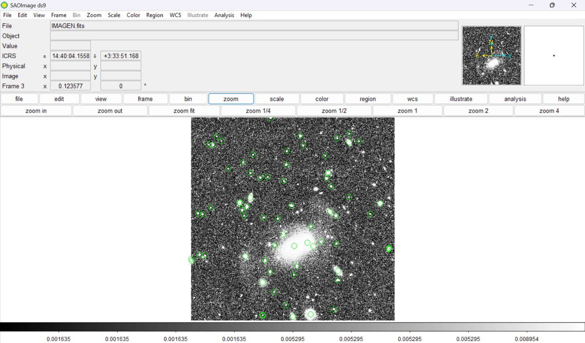
Clasificación Estrella/Galaxia
Clasificar objetos entre estrellas y galaxias es una tarea importante en astronomía, SExtractor nos proporciona un parámetro llamado CLASS_STAR para separar ambos tipos de fuentes. Este clasificador se basa en una red neuronal multicapa de propagación directa entrenada a traves de aprendizaje supervisado, un CLASS_STAR cercano a 0 significa que muy probablemente el objeto es una galaxia, mientras que un valor cercano a 1 indica que el objeto es probablemente una estrella. Para más detalles sobre el funcionamiento de este clasificador se puede consultar en el manual de usuario.
Uso del clasificador
Para hacer uso del clasificador de estrellas y galaxias, debemos añadir el parámetro CLASS_STAR a nuestro archivo default.param y volver a ejecutar SExtractor, esto nos actualizará el catálogo con el nuevo parámetro, siendo la cuarta columna en nuestro catálogo.
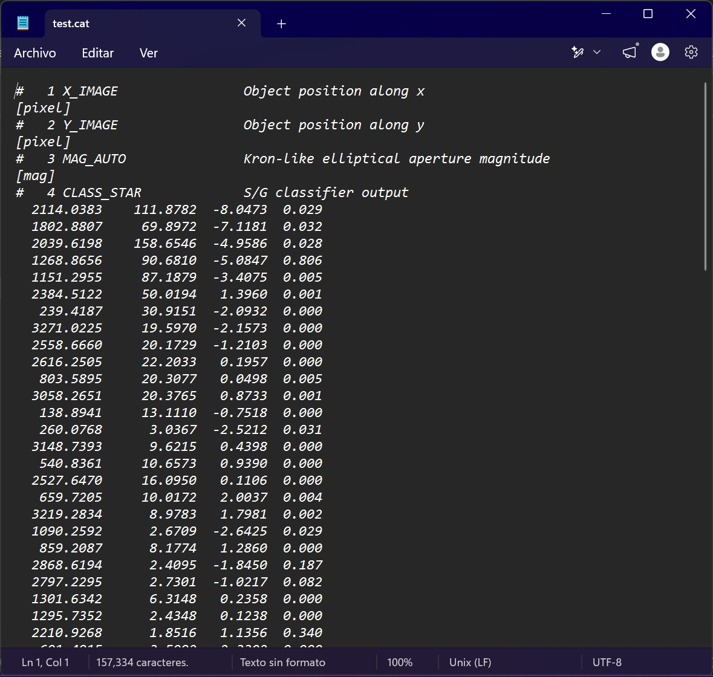
Visualización de la clasificación
Para visualizar la clasificación en DS9 necesitamos un archivo .reg, cuando ejecutamos SExtractor este nos genera el catálogo test.cat, el problema es que este archivo solo tiene texto lleno de números. SAOImage ds9 es un visor de imágenes, pero no puede saber como queremos que interprete la información en la pantalla. El archivo .reg actúa como un traductor visual, toma los datos de nuestro catálogo y los convierte en instrucciones de dibujo que DS9 puede entender.
En lugar de darle a DS9 una lista de números como esta:
2374.4844 2920.0435 -5.7671 0.586
El archivo .reg le da a DS9 una instrucción, como esta:
Dibuja una elipse verde en las coordenadas (2374.4844, 2920.0435) porque este objeto es una estrella.
Para hacer esto se usa la herramienta awk en la terminal, para imprimir un "mapa de instrucciones de dibujo" que DS9 puede proyectar sobre nuestra imagen .fits, el comando es el siguiente:
awk '!/^#/ { if ($3 > 0.8) {print "image; circle(" $1 "," $2 ", 10) # color=green"}
else {print "image; circle(" $1 "," $2 ", 10) # color=red"} }'
test.cat > clasificacion.reg!/^#/ignora las líneas del encabezado, las que comienzan con #if ($3 > 0.8)si la columna 3 (CLASS_STAR) es mayor que 0.8, lo clasifica como estrella- Usa las coordenadas X($1) y Y($2) para dibujar un círculo verde para estrellas y rojo para galaxias con un radio de 10 píxeles, y todo se guarda en un nuevo archivo llamado clasificacion.reg
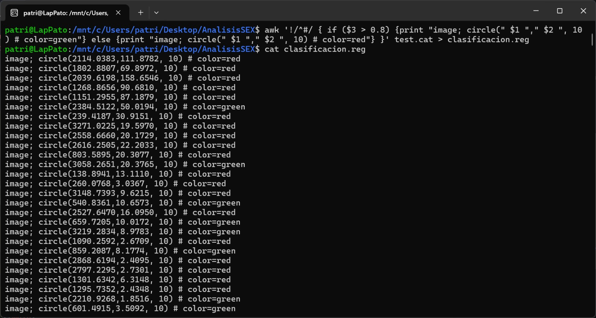
Finalmente, para observar nuestra clasificación en DS9 cargamos nuestra imagen y luego cargamos el archivo de regiones en la pestaña Region > Open y seleccionamos nuestro archivo clasificacion.reg, obteniendo una visualización con círculos verdes y rojos.
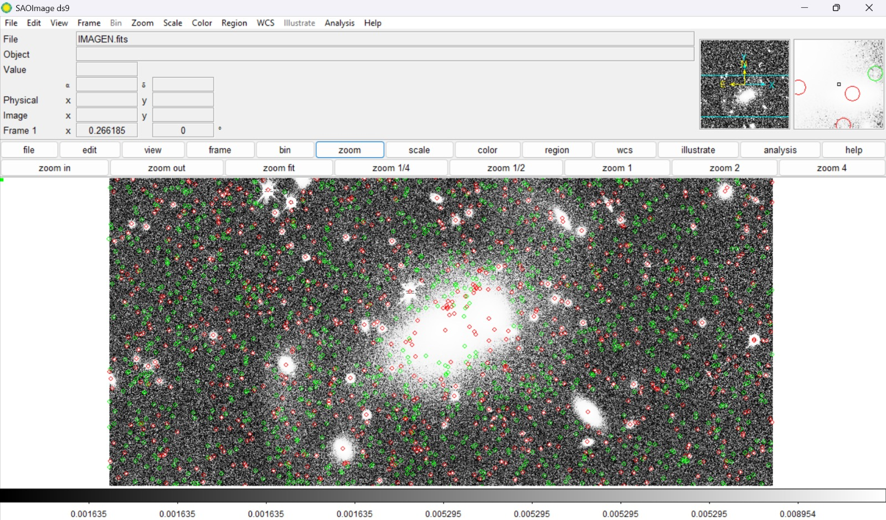